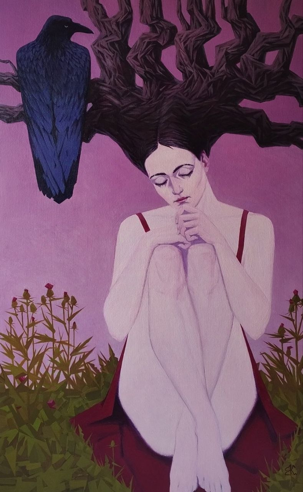
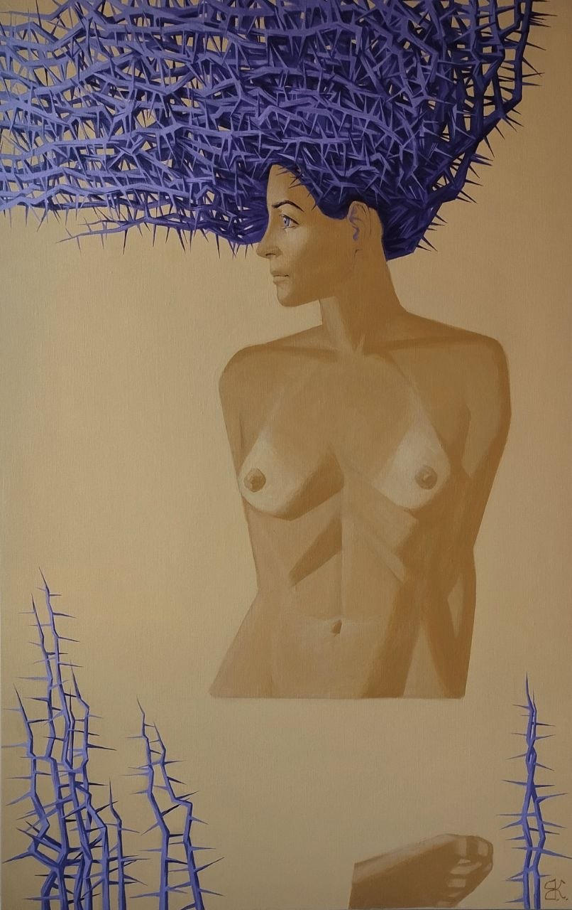
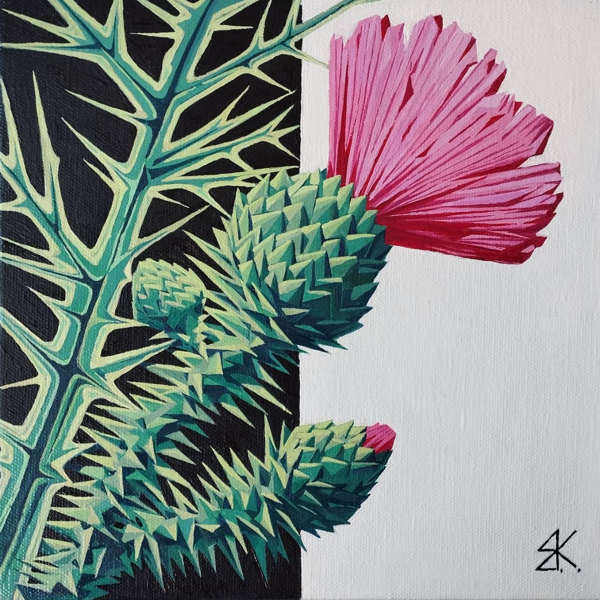

Fine Artist & Scenographer
Evgeny Kreshchensky is a Belgrade-based Fine Artist and Scenographer. Central to his practice are structural symbolism and coded narratives, which he translates through various forms across all scales — from meticulous works to expansive spaces and theatrical environments. Selected works from the “THE HEAD GARDEN: Freedom Vibes” series are currently on view at the Avala Tower, Belgrade (covered by Blic and LookerWeekly). You can also read the recent interview with Evgeny in FashionMag42.


